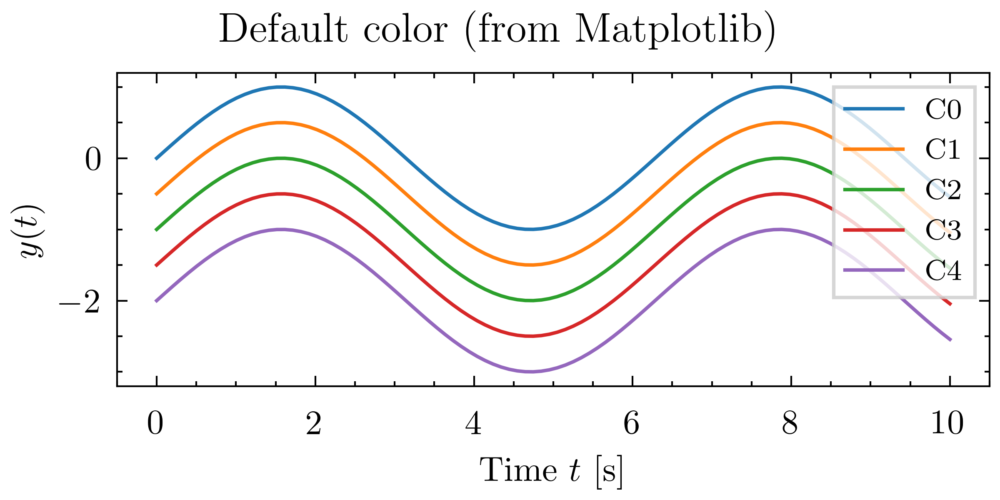
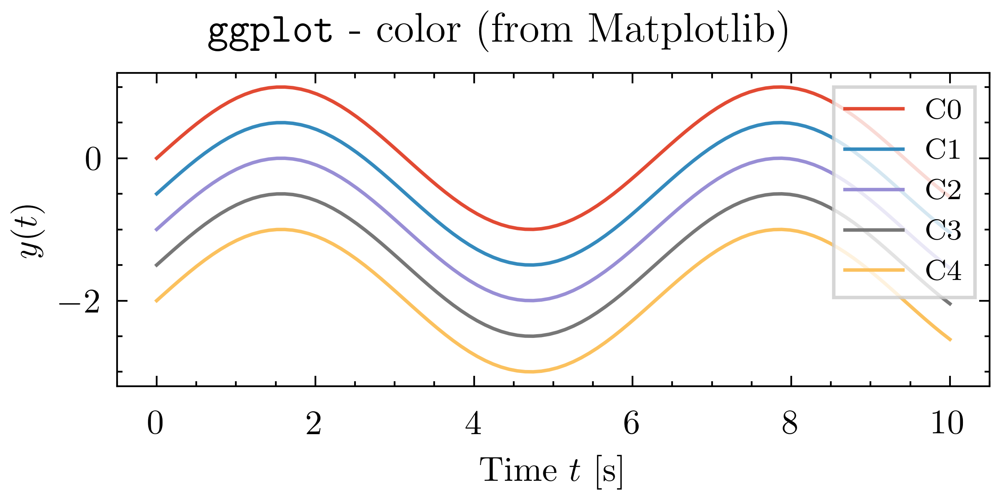
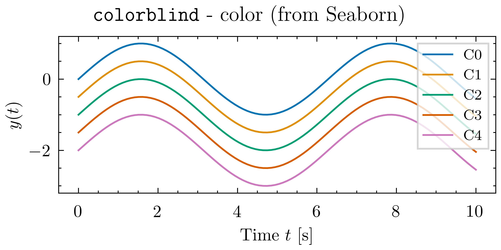

03 - Colors
There are several convenient ways to specify colors in Matplotlib.
Named colors
List of named colors is documented in the Matplotlib documentation - Named Colors. A simple example using named colors is shown below.
import matplotlib.pyplot as plt
import numpy as np
t = np.linspace(0, 10, 100)
y = np.sin(t)
with plt.style.context("physics_plot.pp_base"):
fig, ax = plt.subplots(figsize=(4, 2.5), constrained_layout=True)
ax.plot(t, y - 0.0, "r", label="r (red)")
ax.plot(t, y - 0.3, "k", label="k (black)")
ax.plot(t, y - 0.6, "b", label="b (blue)")
ax.plot(t, y - 0.9, "g", label="g (green)")
ax.plot(t, y - 1.2, "c", label="c (cyan)")
ax.plot(t, y - 1.5, "m", label="m (magenta)")
ax.set_ylabel(r"$y(t)$")
ax.set_xlabel(r"Time $t$ [s]")
ax.legend(loc="upper right")
fig.suptitle(r"Named colors (from Matplotlib)")
fig.savefig("color-named.png")
Color palettes
If you do not specify a color, Matplotlib will cycle through a set of colors. In addition to the default color cycle, we provide a few additional color palettes: ggplot1 and colorblind2 gathered from the Matplotlib and seaborn.
To use a different color palette in combination with the Physics Plot style sheet, just combine the style sheets as a list. For example, to use the physics_plot.colors.ggplot color palette globally:
import matplotlib.pyplot as plt
plt.style.use(["physics_plot.pp_base", "physics_plot.colors.ggplot"])
# ... your plotting code here ...
import matplotlib.pyplot as plt
with plt.style.context(["physics_plot.pp_base", "physics_plot.colors.ggplot"]):
# ... your plotting code here ...
The available color palettes shipped with Physics Plot are: physics_plot.colors.ggplot and physics_plot.colors.colorblind, but you can also combine with any other Matplotlib style sheets.
Following is an example that demonstrates the different color cycles:
1 2 3 4 5 6 7 8 9 10 11 12 13 14 15 16 17 18 19 20 21 22 23 24 25 26 27 28 29 30 31 32 33 34 35 36 37 | |
  
Tip
It is also possible to specify which color among the current color cycle to choose by using the C0, C1, ... notation.
For instance,
1 2 3 4 5 6 7 8 9 10 11 12 13 14 15 16 | |
-
The
ggplotcolor palette is taken from Matplotlib at https://github.com/matplotlib/matplotlib/blob/v3.10.7/lib/matplotlib/mpl-data/stylelib/ggplot.mplstyle. ↩ -
The
colorblindpalette is taken from seaborn at https://github.com/mwaskom/seaborn/blob/v0.13/seaborn/palettes.py. ↩